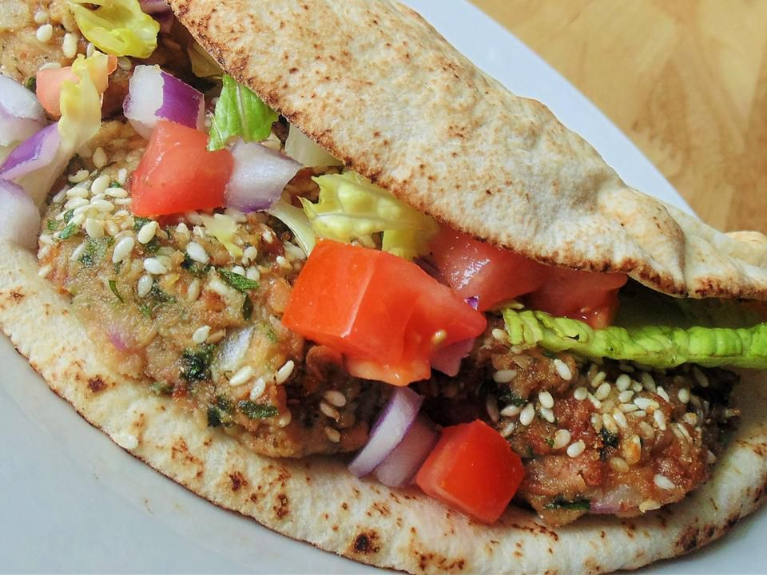

The Mysterious Falafel

Now, let us venture into the realm of falafel, a culinary delight renowned across the lands. With a base of ground chickpeas or fava beans, mixed with aromatic herbs and spices, these crispy, golden-brown orbs are a treasure to behold. Served alongside fresh pita bread, tahini sauce, and a medley of pickled vegetables, falafel transports you to the bustling streets of Cairo.
The Ingredients
- Dry fave beans
- Fresh herbs:
- Leek
- Baking soda
- Spices
How To Do It
- Place all the above ingredients in a food processor and process several times until you achieve your desired texture.
- I like my falafel a bit grainy like the texture above, some people like it very fine so it is really up to your taste.
- Now for the fun part, using a whisk or your electric beaters, beat for like 5 minutes. Yes 5 minutes until it gets really airy and fluffy.
- Form falafel into balls or discs dip in sesame seeds (optional) and fry in hot oil until golden brown.